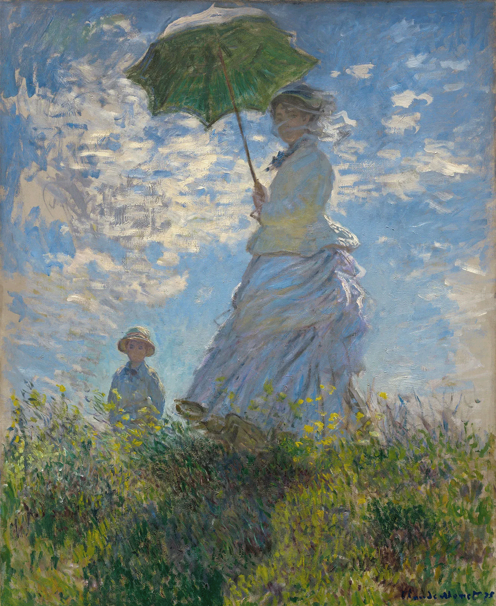

Monet mostly paited landscapes, his painting are colorful and airy he brings attention to light bringing out the vibrancy with bold brush strokes.
Monet is one of my favotite artist, his paiting are beautiful with lots of meaning behine every stoke, for example this paiting in particular is about his child and mistress
which he loved dearly.
- Bauhaus Style
Posters for the 1923 Bauhaus exhibition in Weimar, these posters where designed for a competition,
the design features complete and cut out shapes a solid and hollow insides with the signiture Bauhaus logo.
I like this style of poster because they are simple but it still catches your eye with it shape and colors.
- Rococo Style
The Triumph of Venus is a Rococo style oil paiting by François Boucher, this paiting potrais Venus the goddess of love coming out if the water with other mithological beings.
This style inpires me because of its attention to details that brings the paiting almost to live, you can feel the effort and love to create the painting.
 Stella Talavera
Stella Talavera